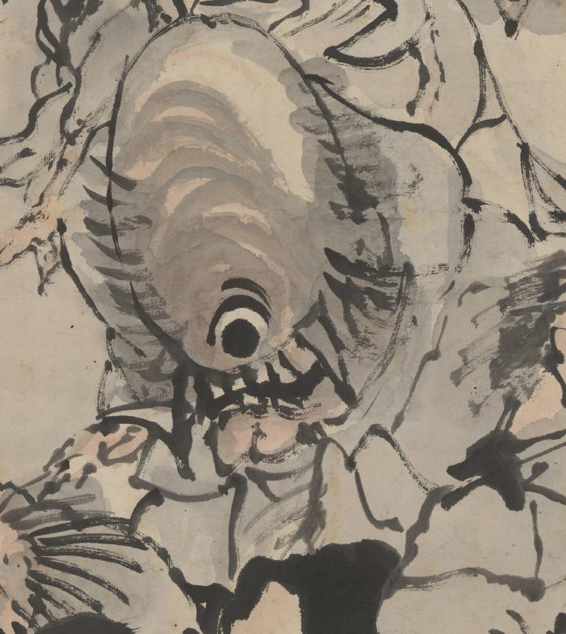

一つ目の化物。高くそびえるような額に目玉が1つついている。鼻はなく、前歯をむき出している。頭には髪がまばらに生えている。体をかがめて歩いている。
著作者：高井鴻山／出典：親書誌：U426_nichibunken_0099：群妖図；グンヨウズ／日付：2006／資源識別子：U426_nichibunken_0099_0006_0000
Copyright (c)2010- International Research Center for Japanese Studies, Kyoto, Japan. All rights reserved.